2015 Holiday Web Page

| Erich and Margie's 2015 Holiday Web Page | |
January We spent New Year's Eve alone but intoxicated. Margie sorted 27 years of old files, filling 2 grocery bags with trash, and retrieving 6 usable paper clips. We visited Lynn and Chris at their new place, and had some DayGlo green curry. Erich had 8 tangerines for lunch. Linda and Deborah came to visit, watching skydivers and doing some bird watching at Green Springs. We went to the New Smyrna Art Festival for the first time, and saw the Porchdogs perform.
February We watched Groundhog Day. Again. We went to see Naming the Twins at Beth and Jordy's place, an excellent outdoor concert on a beautiful day. We had the worst meal ever at Buffet City. We visited Erin and Tom at their condo, listening to the Tree Frogs and eating some great Italian food. Erich made a list of his favorite 100 songs. We celebrated the Chinese New Year by eating Chinese food and playing mah jongg.
March The last weekend of spring break we saw 3 concerts: Bela Fleck and Abagail Washburn in Orlando, Brian Smalley in Mount Dora, and Ben Prestage in Deland. On π day, Erich went to see one of his senior research students give an amazing voice senior recital. We braved the crowds to ride the SunRail down to the Winter Park Art Festival. At the dog park, Gamble played with some... ferrets. There was a bomb scare at Stetson. Erich's friend Barbara visited from Arkansas. We got rained on at the beach, blasted by Suenalo at Cafe Da Vinci, Barb got a hole-in-one on the hardest hole at mini-golf, hiked more of the Florida trail, did so-so at trivia at the Elusive Grape, and had many a good talk.
April The three of us were all square ages for most of the month. Erich got his first two senior discounts, both in error, to much amusement from Margie. Surprisingly, Gamble liked the Easter bunny. Barb hosted a fabulous Easter brunch. We saw the Maharajah Flamenco Trio at Embry-Riddle. We explored the free acts at Delandapalooza with the Dunns. Gamble found a spicebush swallowtail caterpillar. The clerk at Publix didn't know what half of $7.99 was. To avoid a larger journal page fee, Erich became a member of the National Association of Biology Teachers. We went hot air ballooning for Erich's 50th birthday and only hit two trees. At the 6th annual mini-golf tournament, we tied with each other but failed to bring home a trophy. We attended another slide show at the Dunn's, this one of their trip to Patagonia. The Brantons had us over for another living room concert: Sam Pacetti.
May We saw Joan Armatrading in concert. And then Lisa Loeb, though she forgot words to her own songs. Then we went on vacation to Ft. Myers Beach, and you can find some pictures here. Erich was threatened with legal action by a mini-golf course in Lake Worth because of one of his (above average) mini-golf reviews. John Nash, the only Nobel Prize winner Erich ever met, died in a car accident.
June We watched 3 seasons of "Longmire". We passed a truck containing the front half of an airplane fuselage. Erich's father and his partner Jerry came to visit. We did the ocean, where Erich did valet parking for the first time, and saw his first shark in the wild. We also went to the flea market, an art museum, and some good restaurants. Erich watched 3 seasons of "Orange is the New Black". Margie and Missy did the Deland Ice Cream Walk.
July Margie captured a stray lizard in her office, only to have it crawl up her arm and into her shirt when she got it outside. Margie got a phone call from her bank, asking how her interaction went the day before when she called to request no phone calls. We were visited by a two-striped walking stick. Margie took a picture of a "Prickly Mickey". Margie discovered a sticker with the word "Front" on her body, with no idea how it got there. (No, it was not on her front.) We went to our first DeLand Suns game. Margie cleared 600 feet of fencing.
August We tried Puerto Rican food for the first time. Three bears visited our lot. We hosted a debate party, and threw marshmallows at the TV when Republicans said, well, pretty much anything. Erich was contacted by a crank who claimed he had solved Newton's Kissing Spheres problem. Erich contributed a few dozen puzzles to a puzzle book, hopefully the first in a series. Paige, the stalker of the math department, was removed from the University.
September There was a major water leak in the Math/CS Department. We hosted another debate party, and played Republican Buzzword Bingo. Miguel and Regina hosted a Latin-themed pot luck to show slides of their Peru trip. Erich watched 2 seasons of "Bojack Horseman", and Margie watched 6 seasons of "Murdoch Mysteries". Then the new TV season rescued us from eternal reruns.
October A tire rolled into traffic right in front of Erich's car on the way home one day. We visited St. Augustine for a night to hear Ken McAnlis, Dewey Via, and Stu Weaver play guitar. We also toured a distillery, did some Christmas shopping, and ate well. The next night we heard Brian Smalley in Mount Dora. Erich gave $5 to a beggar, and the beggar complained he needed more. We celebrated National Dessert Day in the obvious way. And we celebrated No Bra Day the next day. In the obvious way. We had some folks over to watch the first Democratic debate. Margie started doing yoga. Gamble found a wallet and helped return it to its owner. Many of Erich's students dressed up for Halloween, and you can see some pictures here.
November Erich's father had an art show in Chicago. We went to Hunters for the first time, for pumpkin waffles. We went to Denny's for the first time in a decade, for pumpkin pancakes. Erich had a student cry in his office when a bad test grade lowered her average in the class to 94%. We discovered a cloth napkin in Erich's car - did we unwittingly steal it from a restaurant? We celebrated Thanksgiving with Missy and Barb and 2 international students. Margie's entrance into Gerber Collision & Glass was thwarted by.... a collision that had happened in their driveway.
December We went to see Brian Smalley play for the third time this year. Erich had TWO students who couldn't pass the class even if they aced the final, and both of them took the final anyway. We went to the Orange City Christmas Parade for the first time. One of our former students applied to be an astronaut. Erich had Captain Crunch for the first time in decades. Erich was mistakenly informed by his doctor an hour before before his colonoscopy that his colonoscopy went just fine. But then it went fine. Erich's Mathematical Horoscope web page was published by a university math magazine in London. Paige the stalker, after filing a complaint about several people in the department, asked Erich for a letter of reference. We had some friends over to celebrate the solstice. Margie enjoyed the Advent calendar that Missy gave her. We learned what a mugwump was. For the first time we can remember, neither of us got sick all year. And the napkin mystery went unsolved.
TV shows we watched that we will miss: A to Z, The Mentalist, Parenthood, Covert Affairs, Perception, Garfunkel and Oates, Gracepoint, Forever, Battle Creek, and CSI. Erich's list of humorous things he heard football announcers say this year is here. And below you can see pictures of more things we found this year on our property.
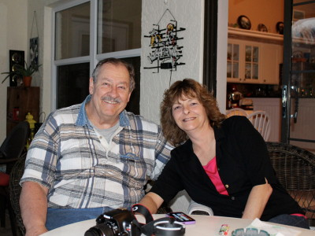 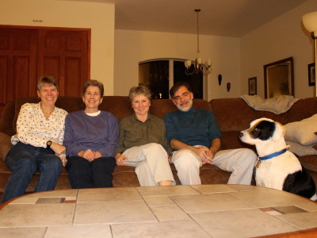 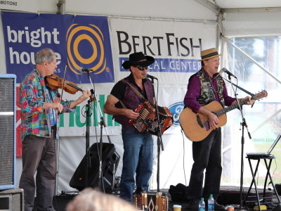 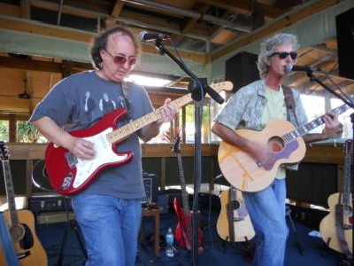 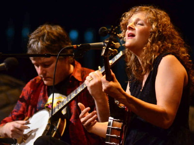 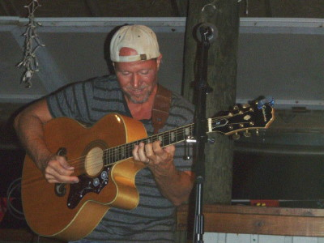 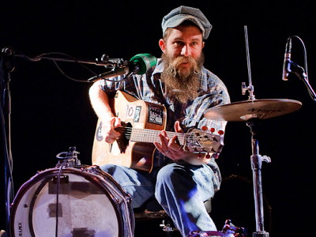 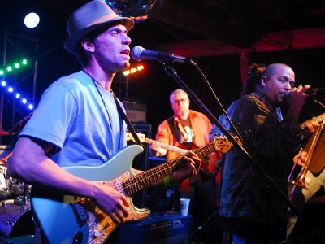 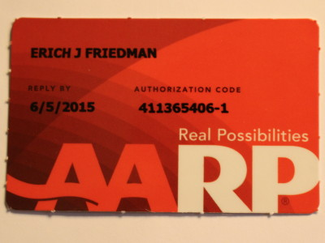 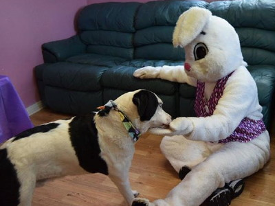 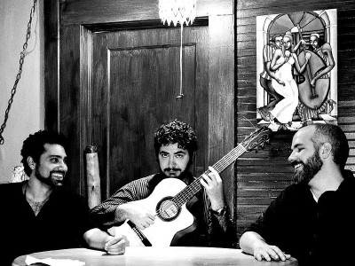 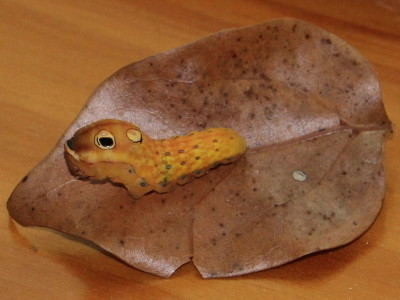 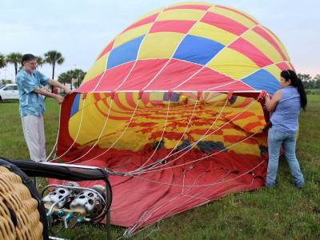 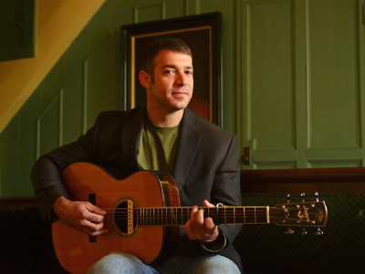 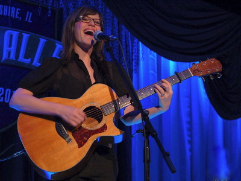 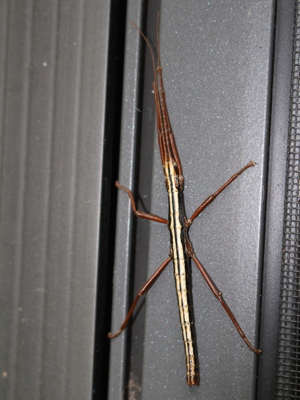 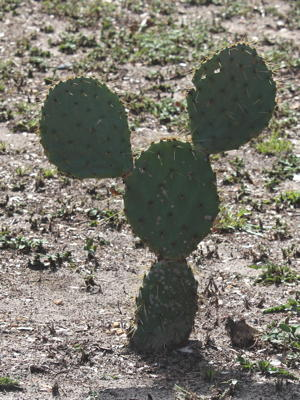 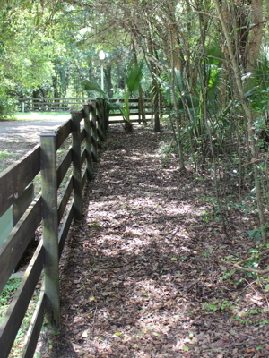 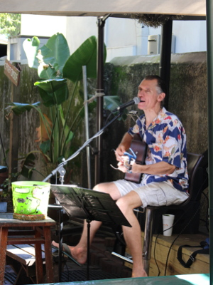 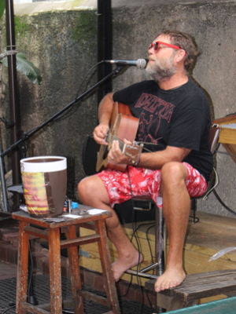 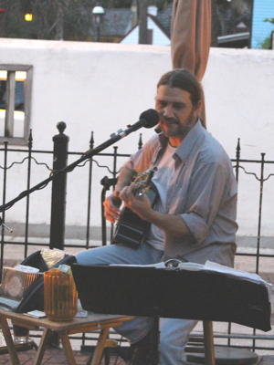 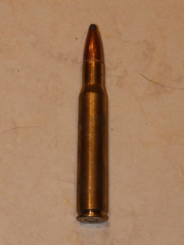 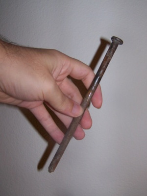 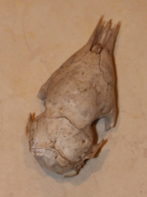
| 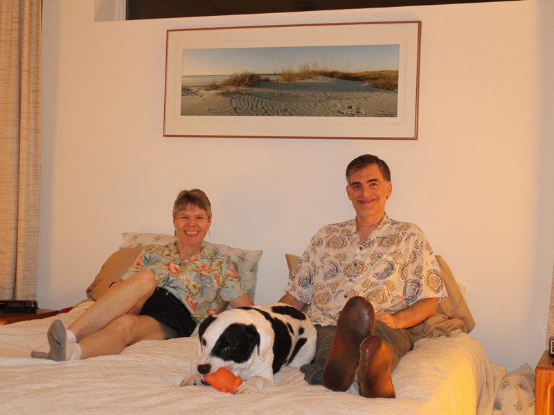 |